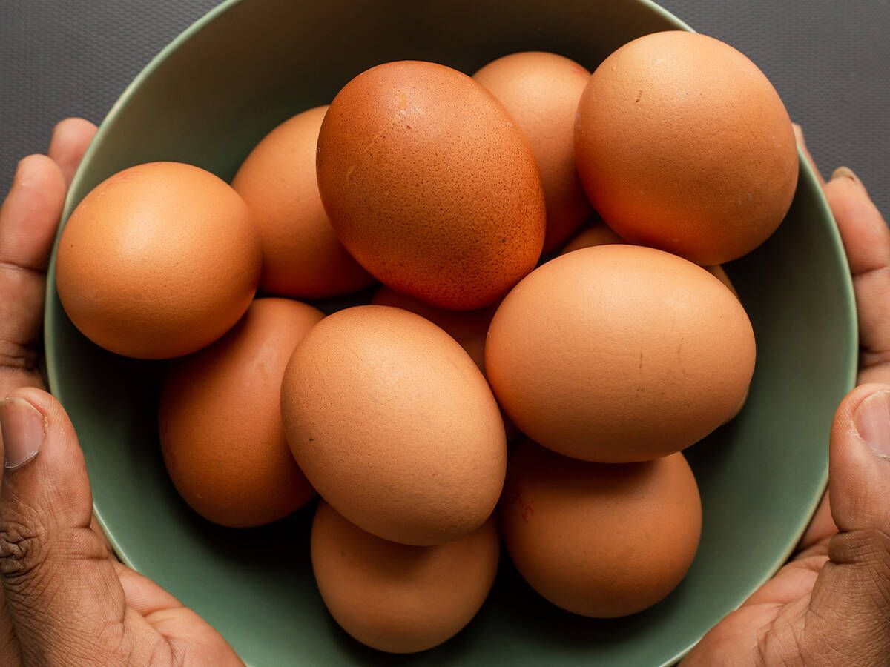
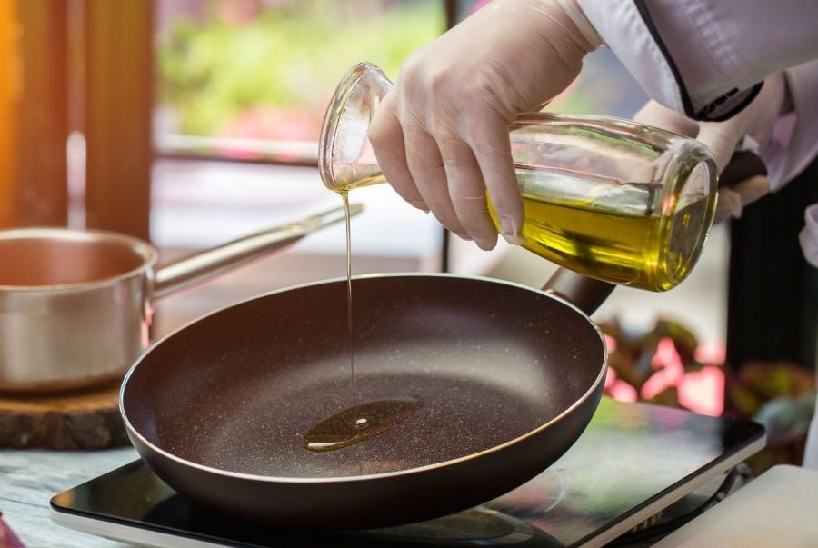
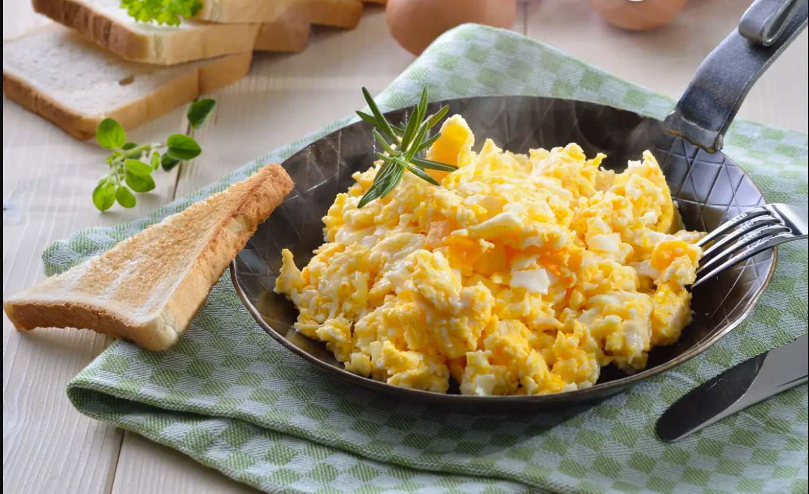
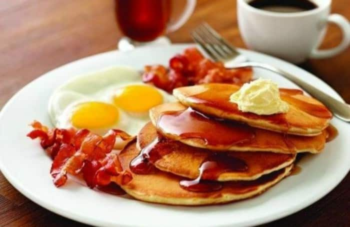

Como Preparar Un Huevito
Integrantes:
Jacob Isaac Trureo Ortiz
Francisco Javier Mella Jorquera
Paso 1
Escoger un Huevo, del refrigerador o gallina (opcional) y proceder a lavarlo, luego sacar una sarten.
Paso 2
Verter aceite dentro o mantequilla y procede a calentar el sarten
Paso 3
Rompa el huevo dentro del sarten y utilizar una cuchara de palo o cuchara de metal dependiendo del huevo requerido

Paso 4
En caso de ser huevo frito, debe juntar el aceite de la sarten y bañar el huevo procurando no romper la yema e repetir este proceso hasta que el huevo este crujiente y frito

En caso de ser huevos revueltos debe usar 2 o mas huevos para la receta, rompa los huevos usados e proceda a aplaztar las yemas con la cuchara e revuelva hasta que los huevos se empiezen a quedar solidos
Paso 5
Agrege sal e sirva, puede acompañar sus huevos con lo que quiera.
